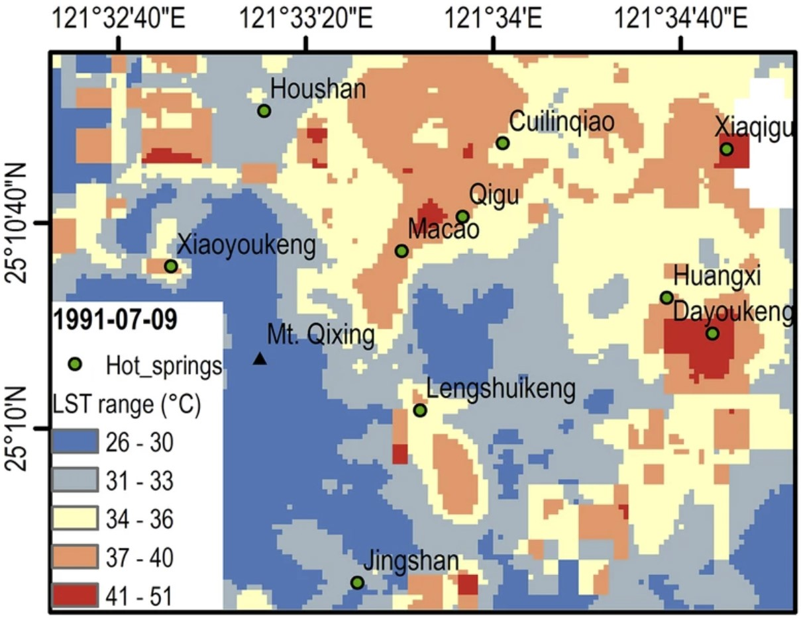
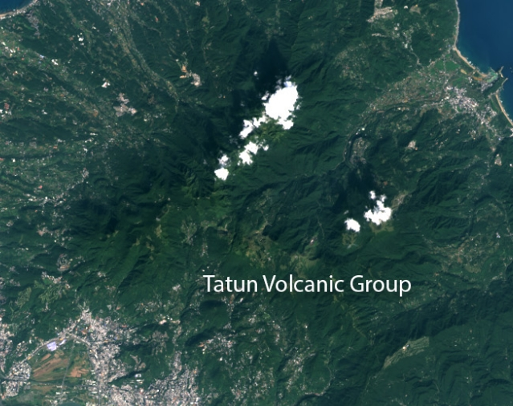

子計畫一、大屯火山群七星山地區之火山地形與地表溫度：以無人機載光達及熱像儀進行高解析度之調查與偵測
前言
七星山是大屯火山群最高的火山，也被多項研究認為是潛在的活動火山，然而目前僅存在解析度較低的火山地形繪製資料，而且尚未有高解析度的地表溫度分布資料。由於高解析度地形，對解析不同時期噴發的火山物質界線，有極大的影響，為了進一步繪製精確的界線，我們需要利用最新發展的無人機光達技術獲取高精度地形，以精確地解析火山噴發活動所造成的地形樣貌。此外，火山地區地表溫度的分布狀況，可以顯示目前火山熱活動的狀態，但是大屯火山群七星山地區，目前尚未有系統性的地表溫度分布觀測。因此本計畫擬以最新的無人機遙測技術，來獲取重要區域的高解析度數值地形與地表溫度資料。
研究成果
本計畫研究成果著重於高解析度的資料獲取與分析，可總結為下面四大項：火山光達地形線型判釋、無人機載光達地形測繪、無人機載熱像儀地表溫度拍攝：大油坑及小油坑、衛星地表溫度長期變化與火山活動之關連性。
火山光達地形線型判釋

無人機載光達地形測繪

無人機載熱像儀地表溫度拍攝：大油坑及小油坑

衛星地表溫度長期變化與火山活動之關連性
- 研究成果介紹

更多研究成果 - NASA 專文介紹

Could Land Surface Temperature Help Predict Earthquakes?
資料下載
請至「資料下載」專頁下載。
子計畫主持人： 詹瑜璋 研究員
研究團隊：詹海柏（博士後研究員）、孫正瑋（博士生）、羅秋月（研究助理）